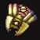
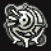

目次 > ゲームについて > 日本Falcom 攻略 > ZWEI II > アイテム一覧 > 武器、魔法
らんの眼
ZWEI II (ツヴァイ 2、ZWEI II Plus)
| 概要 | 情報 | 攻略チャート |
| フード交換 | ペットについて | ボス戦 |
| 敵キャラ一覧 | ハンターランク | G-コロッセオ |
| アイテム一覧 | ガジェット一覧 | トレジャー一覧 |
| ダンジョン一覧 | クリアデータ特典 | Plusの追加要素 |
| ZWEI II攻略へ | 目次へ戻る |
| [ 武器、魔法 ] [ 防具 ] [ アクセサリー ] [ イベントアイテム ] [ フード ] |
| 武器 |
| 名前 | 画像 | 説明 | 入手方法 |
| アンカーギア | ラグナ愛用の武器。 パーツを装着することで様々な能力を得る。 |
(初期装備) | |
| フックギア |  | フックパーツを装着したアンカーギア。 攻撃ボタンを押している間、敵や物を掴む。 |
「Aパーツ」を入手し、改造する |
| バーニングギア | 発火パーツを装着したアンカーギア。 攻撃時にアンカーギアから炎を発生する。 |
「Dパーツ」を入手し、改造する | |
| グライドギア | 滑空飛行パーツを装着したアンカーギア。 攻撃ボタンを押している間、滑空モードに変形する。 |
「Eパーツ」を入手し、改造する | |
| ブレードギア | 謎のパーツを装着したアンカーギア。 究極の戦闘能力を持つ。 |
「Fパーツ」を入手し、改造する | |
| マッスルギア | 怪しいぬいぐるみを仕込んだアンカーギア。 リーチが長く情熱で熱く燃えている。 |
G-コロッセオの自動販売機 <<G-販売機>> で「カプセルトイ」を全て集める | |
| 名前 | 画像 | 説明 | 入手方法 |
| 魔法 |
| 名前 | 画像 | 説明 | 入手方法 |
| 無垢の魔法 |  | 無属性の魔法。連射性に優れた光弾を発射する。 | (初期装備) |
| 地裂の魔法 | 地属性の魔法。地面に放射状の衝撃を与える。 | アークシェロブを倒す | |
| 凍結の魔法 | 水属性の魔法。敵を凍らせる冷凍弾を放つ。 | エフェメルガを倒す | |
| 疾風の魔法 | 風属性の魔法。竜巻を発生させて敵を巻き込む。 | アビスフラワーを倒す | |
| 焦熱の魔法 | 火属性の魔法。敵を追尾する火の精霊を撃ち出す。 | ファブニールを倒す | |
| 極光の魔法 | 光属性の魔法。強力な光線で一直線に敵を貫く。 | 星降りの里のイベントで入手 | |
| 常闇の魔法 | 闇属性の魔法。魔神の手を召喚して敵の魂を削る。 | 真ザハールを倒す | |
| 名前 | 画像 | 説明 | 入手方法 |
| [ 武器、魔法 ] [ 防具 ] [ アクセサリー ] [ イベントアイテム ] [ フード ] |
| 概要 | 情報 | 攻略チャート |
| フード交換 | ペットについて | ボス戦 |
| 敵キャラ一覧 | ハンターランク | G-コロッセオ |
| アイテム一覧 | ガジェット一覧 | トレジャー一覧 |
| ダンジョン一覧 | クリアデータ特典 | Plusの追加要素 |
| ページの上部へ | ZWEI II 攻略へ | 目次へ戻る |